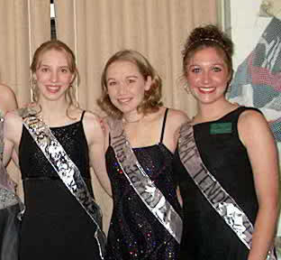

This is my friend Nicole: the expatriate. Yah, it turned out that after a year in France, Nicole hadn't had enough quite yet and decided to emmigrate to the country. That isn't entirely a surprise. As it turns out, several of my friends who study abroad tend to fall in love overseas, and Nicole was no different. It was a difficult year for Nicole. She had alot to deal with. She was attempted to maintain a very long distance relationship with a not-so-supportive Fernando, which after a good two years, came to an end. Nicole dealt with issues of her own personal limits and her personal spirtuality, as well as her plans for the rest of her life. In the end, Nicole realized exactly what would make her happy...SHE DEFECTED!
Well, it wasn't as dramatic as I made it out to be. I mean, she met this awesome guy in France named Alain (the non-hairy guy pictured above), and she fell in love with the country and Angers, and the University, so she decided to stay. We usually stay in touch, we write now and then. Unfortunately, though, she moved and I lost her address :-( I wish I could somehow find her, but she's been seemingly lost amongst the mass of stuck-up French people. However discouraged, I am determined to find her out!

| This is Nicole during the one year she actually spent going to Notre Dame. It's too bad she's not a lesbian, she could have fallen in love with those girls...maybe then she wouldn't have emmigrated to France :'( |
My most cherished memories of Nicole came about the last summer she was in the States. We had a period of about four weeks to hang out like the good ol' days. We had alittle drinky-drinky w/ some of her brother's friends. We dug a hole in her yard and laid some concrete (I know, personally I liked this the best). She also took me out on her horses and gave me a free lesson! The best memory, however, would have to be when I burned my face in front of everyone when I brought her to John's party to introduce her to my friends. Yah, I was on the way to the hospital, and she came out to give me a hug and tell me she'd see me later.
Unfortunately, that's the last memory she hast of me—with my ugly ass burnt face. On the last night I spent with her, I was with her, Bethany, and Matt tagged along. In the course of the night, I cut up an almond with my fingernails—and unbenownst to me—I was allergic to it and broke out in a rash and my eyes got all puffy. So, here I am, giving her a hug at her door with a burnt upper lip and puffy eyes telling her I wish she didn't have to go. I mean, I would have gotten out of the country so fast!
I love Nicole, and I miss her a whole lot. I will see her very soon, though, I'm sure of it.
Unfortunately, that's the last memory she hast of me—with my ugly ass burnt face. On the last night I spent with her, I was with her, Bethany, and Matt tagged along. In the course of the night, I cut up an almond with my fingernails—and unbenownst to me—I was allergic to it and broke out in a rash and my eyes got all puffy. So, here I am, giving her a hug at her door with a burnt upper lip and puffy eyes telling her I wish she didn't have to go. I mean, I would have gotten out of the country so fast!
I love Nicole, and I miss her a whole lot. I will see her very soon, though, I'm sure of it.
There is just one thing I can think that Nicole needs to hear just a WHOLE LOT more of...
Shut Your Mouth
Welcome
We love you
We hate you
We love you
We want you
We need you
We wish we were like you
They say you're a saint
You're a whore
You're a sinner
That he had you
He made you
He can't live without you
Would you confess if we asked
That you nurture the urge
To declare that it's time
To settle down
With a man of your own
You want a baby
A family
A piece of security
Shut your mouth
Try not to panic
Just shut your mouth
If you can do it
Shut your mouth
Try not to panic
Just shut your mouth
If you can do it
Just shut your mouth
What's your opinion of the dire situation
In our land here
Our guest here
Of course you'll be nice here
How do you feel about God and religion
Are you good people
Bad people
Guess it doesn't matter people
Your place
My place
Make her bring that famous face
You got some
You want some
You wanna let me get you some
We know your music but of course we'd never buy it
It's too fake man
Right man!
(We don't give a fucking damn)
Shut your mouth
Try not to panic
Just shut your mouth
If you can do it
Shut your mouth
Try not to panic
Just shut your mouth
If you can do it
I hear you say it
Play it smart girl
Win the game love
Give'em what they want
What they want to see and you could be a big star
You could go far
Make a landmark
What have you been reading you smart girl?
Win the game love
Give'em what they want
What they want to see and you could be a big star
You could go far
Make a landmark
Make a shitload
And the world spins by
With everybody moaning
Pissing, bitching and everyone is shitting
On their friends
On their love
On their oaths
On their honor
On their graves
On their mouths
And their words say nothing
Shut your mouth
Try not to panic
Just shut your mouth
If you can do it
Shut your mouth
Try not to panic
Just shut your mouth
If you can do it
Just shut your mouth
I waited to say something
Oh shut your mouth
I wanted to say something
Just shut your mouth
I waited to say something
Oh shut your mouth
I wanted to be something
Just shut your mouth